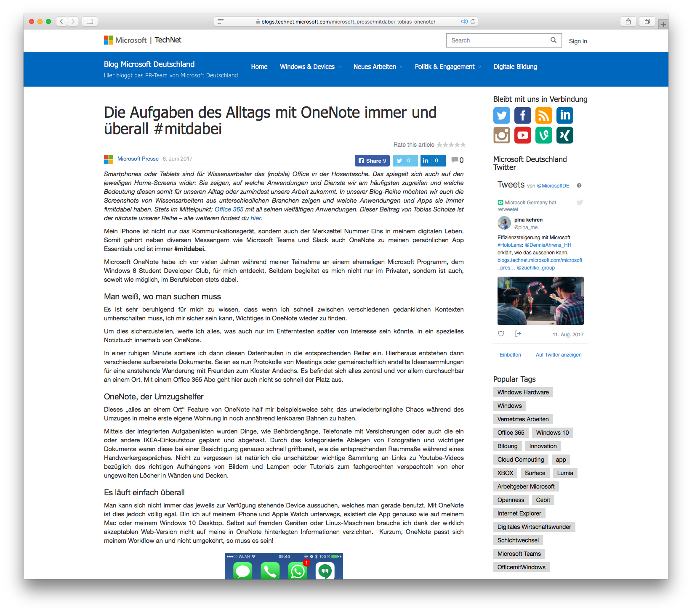

Da dieser Blog auch etwas als meine “Gedanken-Schatulle” dient halte ich hier manche, nicht alltäglichen, Ereignisse fest.

Dieses mal geht es um meinen ersten (und wohl auch letzten) Blog-Beitrag für das deutschsprachige TechNet von Microsoft. Generell handelte es sich hierbei um eine SocialMedia Aktion seitens Microsoft für die #immerdabei Kampagne. Offiziell wird die Aktion wie folgt beschrieben:
Smartphones oder Tablets sind für Wissensarbeiter das (mobile) Office in der Hosentasche. Das spiegelt sich auch auf den jeweiligen Home-Screens wider: Sie zeigen, auf welche Anwendungen und Dienste wir am häufigsten zugreifen und welche Bedeutung diesen somit für unseren Alltag oder zumindest unsere Arbeit zukommt. In unserer Blog-Reihe möchten wir euch die Screenshots von Wissensarbeitern aus unterschiedlichen Branchen zeigen und welche Anwendungen und Apps sie immer #mitdabei haben.
Auf jeden Fall war ich dort mit meinem iPhone und OneNote vertreten und habe über Erfahrungen mit diesem Programm geschrieben. Leider vergas ich damals sogar meinen Tipp – der nun mit aktuellen OneNote Versionen wohl nicht mehr funktionieren scheint. Dennoch, wer Sektionen in Notizbüchern horizontal (jetzt ist es immer vertikal) anordnet, kann durch die Verwendung von Emojis Platz sparen. Beispielsweise den Titel aus dem Reiter “Mietsache” einfach ein 🏡 substituieren.
Zurück